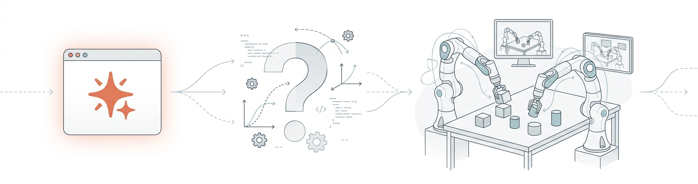
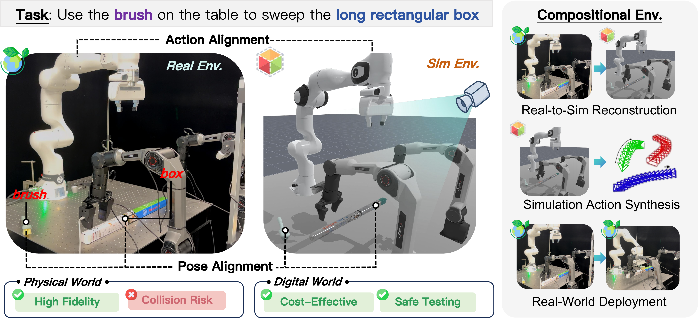
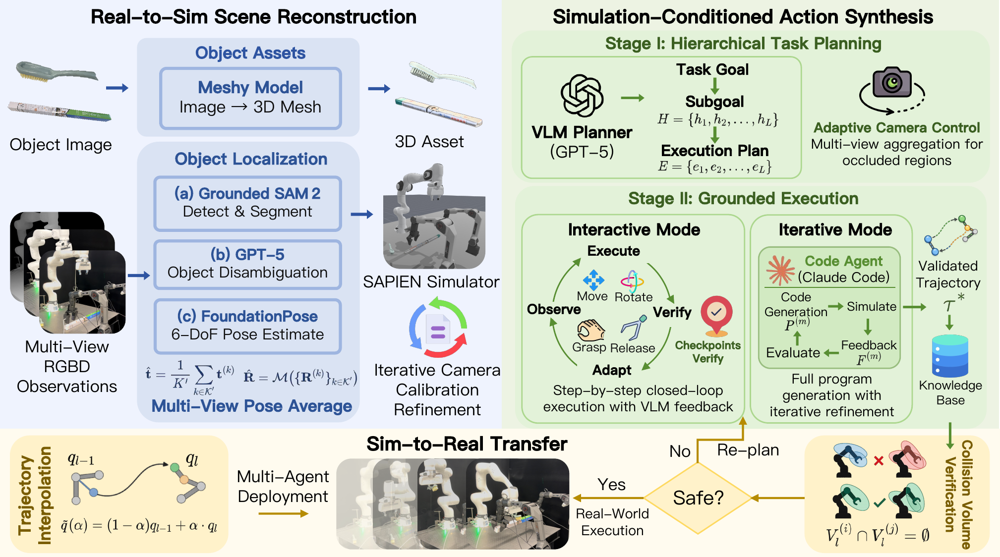
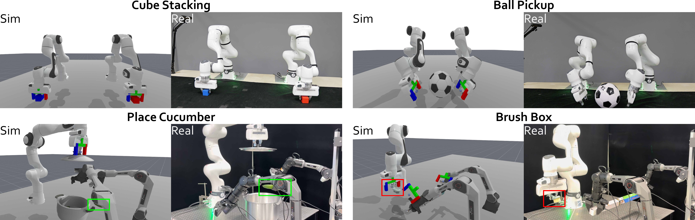
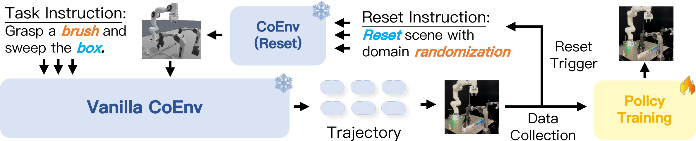

Under Review
Multi-agent embodied systems hold promise for complex collaborative manipulation, yet face critical challenges in spatial coordination, temporal reasoning, and shared workspace awareness. Inspired by human collaboration where cognitive planning occurs separately from physical execution, we introduce the concept of compositional environment—a synergistic integration of real-world and simulation components that enables multiple robotic agents to perceive intentions and operate within a unified decision-making space. Building on this concept, we present CoEnv, a framework that leverages simulation for safe strategy exploration while ensuring reliable real-world deployment. CoEnv operates through three stages: real-to-sim scene reconstruction that digitizes physical workspaces, VLM-driven action synthesis supporting both real-time planning with high-level interfaces and iterative planning with code-based trajectory generation, and validated sim-to-real transfer with collision detection for safe deployment. Extensive experiments on challenging multi-arm manipulation benchmarks demonstrate CoEnv's effectiveness in achieving high task success rates and execution efficiency, establishing a new paradigm for multi-agent embodied AI.
Recently, Claude Code—Anthropic's agentic coding tool—has taken the AI community by storm with its remarkable ability to autonomously reason, write, and execute complex programs. While the world marvels at its software engineering prowess, we ask a different question: what happens when we bring this powerful code agent into the physical world?

In CoEnv, we leverage Claude Code as a code-based trajectory generator for multi-robot collaboration. Given a task goal and simulation environment, Claude Code autonomously writes complete programs that coordinate multiple robotic arms—planning grasps, handovers, and collision-free motions—all in a single pass. The generated code is executed in simulation, verified, and iteratively refined through natural language feedback, before being transferred to real robots.
Foundation models and vision-language-action architectures have unlocked unprecedented capabilities in embodied AI, but complex long-horizon manipulation scenarios increasingly demand multi-agent coordination. Unlike single-agent systems, multi-agent collaboration introduces substantial complexity: agents must avoid spatial conflicts, reason about temporal dependencies, and maintain awareness of shared workspace dynamics.
How can multiple robotic agents collaborate safely and effectively in shared physical workspaces?
Inspired by human collaboration—where cognitive planning occurs separately from physical execution—we propose the concept of compositional environment: a synergistic integration of real-world and simulation components that creates a unified decision-making space for multi-agent embodied collaboration. The physical world executes high-fidelity actions, while simulation enables safe, cost-effective strategy exploration. CoEnv bridges both through pose alignment, action mapping, and collision verification.

Motivation of CoEnv. Physical-world execution offers high fidelity but risks costly collisions, while the digital world enables cost-effective and safe testing. CoEnv composes both worlds through pose and action alignment, forming a compositional environment that supports real-to-sim reconstruction, simulation-conditioned action synthesis, and safe real-world deployment.
CoEnv operates through a three-stage pipeline that transforms real-world observations into coordinated multi-agent actions:
Real-to-Sim Scene Reconstruction: Multi-view RGBD observations are converted into a simulator-ready scene. We use Grounded SAM2 for object detection, FoundationPose for 6-DoF pose estimation with multi-view fusion, and ManiSkill (built on SAPIEN) as the simulation backend with iterative camera calibration refinement.
Simulation-Conditioned Action Synthesis: A VLM-based planner decomposes task goals into hierarchical sub-goals and execution plans. Actions are synthesized in two complementary modes: Interactive mode uses closed-loop VLM feedback with adaptive camera control and checkpoint verification for real-time re-planning; Iterative mode leverages a code agent to generate complete multi-agent trajectories in a single program, refined through simulation feedback.
Sim-to-Real Transfer: Validated trajectories are transferred to real robots via trajectory interpolation with collision volume verification, ensuring collision-free multi-agent execution.

Overview of CoEnv. The framework consists of three stages: (1) Real-to-Sim Scene Reconstruction using 3D asset generation, multi-view localization, and iterative camera calibration; (2) Simulation-Conditioned Action Synthesis with hierarchical task planning and two complementary execution modes (interactive and iterative); (3) Sim-to-Real Transfer with trajectory interpolation and collision volume verification.
We evaluate CoEnv on five challenging multi-arm manipulation tasks with increasing coordination complexity, using two-agent (Franka Research 3 × 2) and three-agent (Franka Research 3 + AgileX Piper dual-arm) configurations.

Task demonstrations. Five multi-agent manipulation tasks with keyframes from successful real-world executions. Two-agent tasks: Cube Stacking, Ball Pickup, and Transfer Cylinder. Three-agent tasks: Place Cucumber and Brush Box.
CoEnv achieves an overall 49% success rate across five challenging multi-agent manipulation tasks. The two execution modes exhibit complementary strengths: iterative mode excels at tasks requiring precise trajectory control (e.g., Cube Stacking: 9/10), while interactive mode dominates in complex multi-stage coordination (e.g., Brush Box: 7/10).
| Si: Subtask success rate (x/10). SR: Task success rate (x/10). Overall: Average across both modes. | ||||
| Task | Mode | Subtask Milestones | SR (x/10) | Overall (%) |
|---|---|---|---|---|
| Cube Stacking | Interactive | S1: 7/10, S2: 6/10 | 6/10 | 75% |
| Iterative | S1: 10/10, S2: 9/10 | 9/10 | ||
| Ball Pickup | Interactive | S1: 9/10, S2: 4/10 | 4/10 | 50% |
| Iterative | S1: 6/10, S2: 6/10 | 6/10 | ||
| Transfer Cylinder | Interactive | S1: 9/10, S2: 4/10, S3: 4/10 | 4/10 | 25% |
| Iterative | S1: 6/10, S2: 2/10, S3: 1/10 | 1/10 | ||
| Place Cucumber | Interactive | S1: 9/10, S2: 7/10, S3: 4/10 | 4/10 | 35% |
| Iterative | S1: 8/10, S2: 8/10, S3: 3/10 | 3/10 | ||
| Brush Box | Interactive | S1: 10/10, S2: 9/10, S3: 7/10 | 7/10 | 60% |
| Iterative | S1: 8/10, S2: 8/10, S3: 5/10 | 5/10 | ||

Simulation vs. Real-world execution. Side-by-side comparison demonstrating high visual correspondence between simulated planning and real-world execution across multiple tasks, validating the effectiveness of CoEnv's compositional environment approach.
We ablate two key mechanisms in CoEnv's interactive mode: Adaptive Camera Control and Checkpoint Verification. Both are indispensable—removing adaptive camera reduces average success by 40%, while removing checkpoints causes a 60% drop due to cascading error propagation.
| Variant | Cube Stacking | Ball Pickup | Transfer Cyl. | Place Cuc. | Brush Box | Average |
|---|---|---|---|---|---|---|
| Full CoEnv | 6/10 | 4/10 | 4/10 | 4/10 | 7/10 | 50% |
| w/o Adaptive Camera | 5/10 | 6/10 | 0/10 | 4/10 | 0/10 | 30% |
| w/o Checkpoint Verification | 4/10 | 2/10 | 0/10 | 4/10 | 0/10 | 20% |
Beyond task execution, CoEnv reveals a practical pathway toward scalable multi-agent data generation. The iterative mode produces substantially more episodes per session (up to 11.7× better throughput), as the code agent generates complete trajectories in a single program with lower per-episode token cost. Environment resets account for only ~10–32% of total token consumption, indicating the vast majority of the budget is devoted to productive reasoning.
| Task | Interactive | Iterative | Reset (%) |
|---|---|---|---|
| Cube Stacking | 1.5 | 17.5 | 31.57 |
| Brush Box | 2.5 | 9.5 | 10.54 |

Scalable data collection pipeline. CoEnv first synthesizes and validates manipulation strategies in simulation, then transfers them to real robots for physical execution, collecting real-world multi-agent trajectory data that can be used to train generalist policies, providing an alternative to manual teleoperation.
If you find this project useful, welcome to cite us.
@article{kang2026coenv,
title={CoEnv: Driving Embodied Multi-Agent Collaboration via Compositional Environment},
author={Li Kang and Yutao Fan and Rui Li and Heng Zhou and Yiran Qin and Zhemeng Zhang and Songtao Huang and Xiufeng Song and Zaibin Zhang and Bruno N.Y. Chen and Zhenfei Yin and Dongzhan Zhou and Wangmeng Zuo and Lei Bai},
journal={arXiv preprint arXiv:xxxx.xxxxx},
year={2026}
}